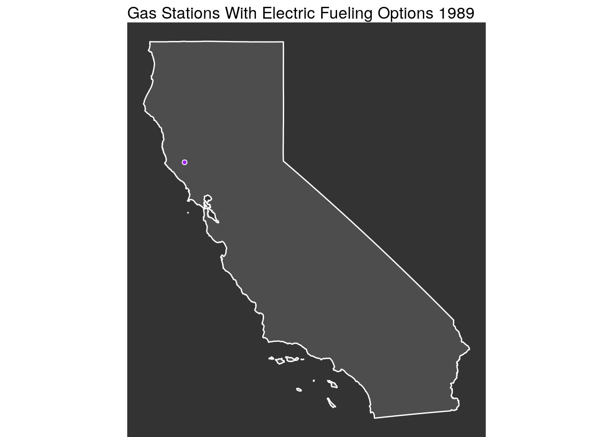

Load needed libraries
library(tidyverse)
library(janitor) # cleans column names
library(USAboundaries) # Download shape files
library(sf) # Used for spatial opperations
library(lubridate)
library(gganimate)This data comes from https://data.ca.gov/dataset/alternative-fuel-station-locations/resource/843e18ca-7a96-4485-a9fe-1ecdd9bbb9b5
df <- read_csv('https://data.ca.gov/dataset/d2136de9-4b98-49f5-b076-022a046cd894/resource/843e18ca-7a96-4485-a9fe-1ecdd9bbb9b5/download/alternative-fuel-station-locations.csv') %>%
clean_names()
# get california shapefile from the USAboundaries package
cali <- us_states(resolution = "high", states = "CA")
# Clean up the gas station data and cast as a sf object
electric <- df %>% filter(fuel_type_code == "ELEC") %>%
filter(!str_detect(latitude, "[a-z]")) %>%
mutate(longitude = as.numeric(longitude),
latitude = as.numeric(latitude)) %>%
st_as_sf(coords=c("longitude","latitude"), crs=4326, remove=FALSE) %>%
mutate(open_date = mdy(open_date),
year = year(open_date)) %>%
filter(!is.na(year))Now we need to apply a spatial filter to only select points in California
in2 <- electric[cali,] # This filters for points inside of the california shape fileMake a classic ggplot map
map <- ggplot(in2)+
geom_sf(data = cali,
fill = "grey30",
color = "white")+
geom_point(aes(x = in2$longitude, y = in2$latitude, group = seq_along(year)),
shape = 21,
color = "white",
ldw = .5,
fill = "purple") +
labs(x = "",
y = "") +
theme_void() +
theme(panel.background = element_rect(fill = "grey20"))## Warning: Ignoring unknown parameters: ldwmapRender an animated version
map + transition_states(year)+
labs(title = "Gas Stations With Electric Fueling Options {closest_state}")+
shadow_mark(past = TRUE, alpha = .5) +
enter_grow() +
enter_fade()